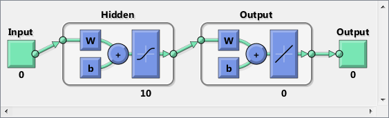
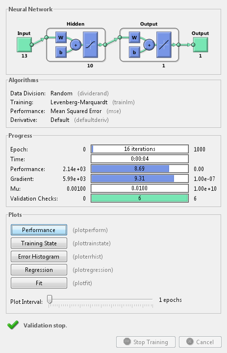
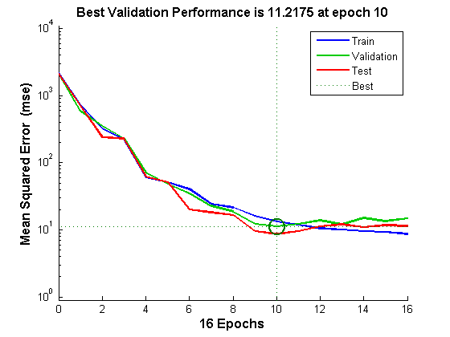
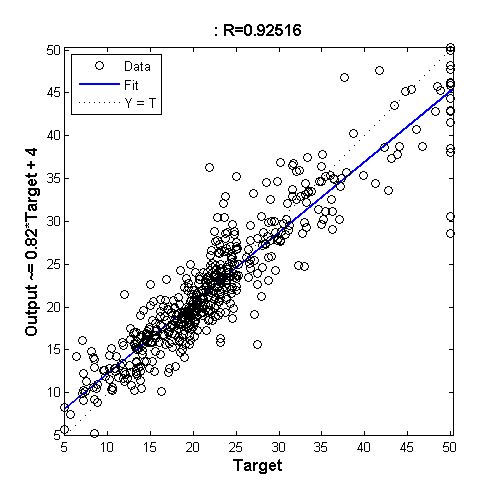
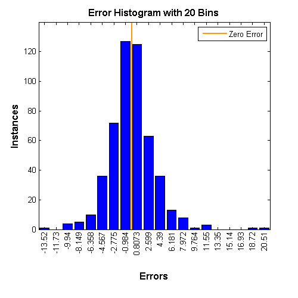

House Price Estimation
This example illustrates how a function fitting neural network can estimate median house prices for a neighborhood based on neighborhood demographics.
Contents
The Problem: Estimate House Values
In this example we attempt to build a neural network that can estimate the median price of a home in a neighborhood described by thirteen demographic attributes:
1. Per capita crime rate per town 2. Proportion of residential land zoned for lots over 25,000 sq. ft. 3. proportion of non-retail business acres per town 4. 1 if tract bounds Charles river, 0 otherwise 5. Nitric oxides concentration (parts per 10 million) 6. Average number of rooms per dwelling 7. Proportion of owner-occupied units built prior to 1940 8. Weighted distances to five Boston employment centres 9. Index of accessibility to radial highways 10. Full-value property-tax rate per $10,000 11. Pupil-teacher ratio by town 12. 1000(Bk - 0.63)^2 13. Percent lower status of the population
This is an example of a fitting problem, where inputs are matched up to associated target outputs, and we would like to create a neural network which not only estimates the known targets given known inputs, but can generalize to accurately estimate outputs for inputs that were not used to design the solution.
Why Neural Networks?
Neural networks are very good at function fit problems. A neural network with enough elements (called neurons) can fit any data with arbitrary accuracy. They are particularly well suited for addressing non-linear problems. Given the non-linear nature of real world phenomena, like house valuation, neural networks are a good candidate for solving the problem.
The thirteeen neighborhood attributes will act as inputs to a neural network, and the median home price will be the target.
The network will be designed by using the attributes of neighborhoods whose median house value is already known to train it to produce the target valuations.
Preparing the Data
Data for function fitting problems are set up for a neural network by organizing the data into two matrices, the input matrix X and the target matrix T.
Each ith column of the input matrix will have thirteen elements representing a neighborhood whose median house value is already known.
Each corresponding column of the target matrix will have one element, representing the median house price in 1000's of dollars.
Here such a dataset is loaded.
[x,t] = house_dataset;
We can view the sizes of inputs X and targets T.
Note that both X and T have 506 columns. These represent 506 neighborhood attributes (inputs) and associated median house values (targets).
Input matrix X has thirteen rows, for the thirteen attributes. Target matrix T has only one row, as for each example we only have one desired output, the median house value.
size(x) size(t)
ans =
13 506
ans =
1 506
Fitting a Function with a Neural Network
The next step is to create a neural network that will learn to estimate median house values.
Since the neural network starts with random initial weights, the results of this example will differ slightly every time it is run. The random seed is set to avoid this randomness. However this is not necessary for your own applications.
setdemorandstream(491218382)
Two-layer (i.e. one-hidden-layer) feed forward neural networks can fit any input-output relationship given enough neurons in the hidden layer. Layers which are not output layers are called hidden layers.
We will try a single hidden layer of 10 neurons for this example. In general, more difficult problems require more neurons, and perhaps more layers. Simpler problems require fewer neurons.
The input and output have sizes of 0 because the network has not yet been configured to match our input and target data. This will happen when the network is trained.
net = fitnet(10); view(net)
Now the network is ready to be trained. The samples are automatically divided into training, validation and test sets. The training set is used to teach the network. Training continues as long as the network continues improving on the validation set. The test set provides a completely independent measure of network accuracy.
The NN Training Tool shows the network being trained and the algorithms used to train it. It also displays the training state during training and the criteria which stopped training will be highlighted in green.
The buttons at the bottom open useful plots which can be opened during and after training. Links next to the algorithm names and plot buttons open documentation on those subjects.
[net,tr] = train(net,x,t); nntraintool
To see how the network's performance improved during training, either click the "Performance" button in the training tool, or call PLOTPERFORM.
Performance is measured in terms of mean squared error, and shown in log scale. It rapidly decreased as the network was trained.
Performance is shown for each of the training, validation and test sets. The version of the network that did best on the validation set is was after training.
plotperform(tr)
Testing the Neural Network
The mean squared error of the trained neural network can now be measured with respect to the testing samples. This will give us a sense of how well the network will do when applied to data from the real world.
testX = x(:,tr.testInd); testT = t(:,tr.testInd); testY = net(testX); perf = mse(net,testT,testY)
perf =
8.6960
Another measure of how well the neural network has fit the data is the regression plot. Here the regression is plotted across all samples.
The regression plot shows the actual network outputs plotted in terms of the associated target values. If the network has learned to fit the data well, the linear fit to this output-target relationship should closely intersect the bottom-left and top-right corners of the plot.
If this is not the case then further training, or training a network with more hidden neurons, would be advisable.
y = net(x); plotregression(t,y)
Another third measure of how well the neural network has fit data is the error histogram. This shows how the error sizes are distributed. Typically most errors are near zero, with very few errors far from that.
e = t - y; ploterrhist(e)
This example illustrated how to design a neural network that estimates the median house value from neighborhood characteristics.
Explore other examples and the documentation for more insight into neural networks and their applications.